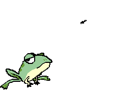

Жаба жаловалась дочке:
— Жаболев, сижу на кочке,
Без жабав — одни жаботы,
Жабываюсь отчего-то;
Лес в округе жаболочен —
Жаблудиться можно ночью,
За жабором в буераки
Жабредают жабияки…
Я нежнее нежабудки,
Вся жабегалась жа сутки,
Пожабросила готовку…
Объявляю жабастовку!

Еще больше жаб...